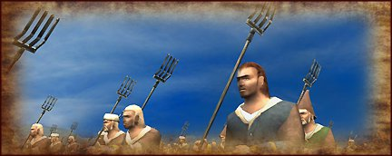

In times of war peasants are forced from their farms and drafted into levies. Good cannon fodder.
Life at the bottom rung of medieval society is not easy or healthy. In times of war peasants are forced from their farms and drafted into levies, and if they are lucky, given some kind of simple weapon to fight with. Unsurprisingly, peasants are undisciplined soldiers who are better at fleeing than they are fighting.

Quality: Peasant
Type: Rural LevyLacks formal military training, poor discipline and morale.
Soldiers: 76
Attack: 1
Charge: 4
Weapon Type: Melee
Defense: 3
Armour: 0
Defense Skill: 3
Shield: 0
Hit Points:1
Recruitment Cost: 120
Upkeep: 100
 Mustering Hall
Mustering HallIn Castles, Peasant Infantry are recruited in Mustering Halls after the Heavy Mail event in the early 13th century (1200-1215)..